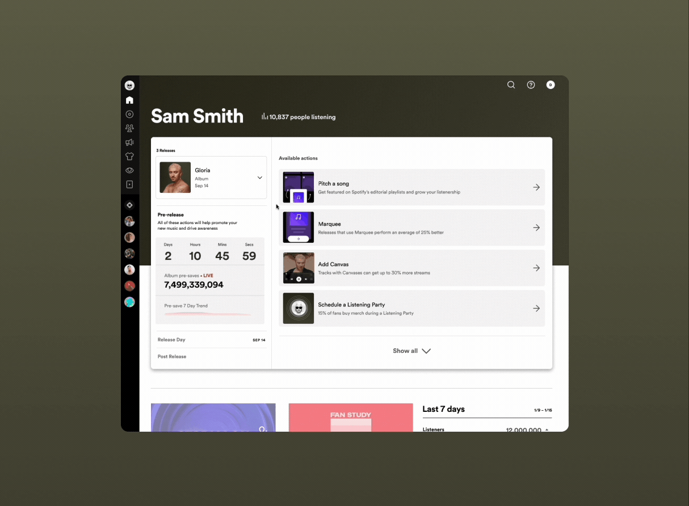
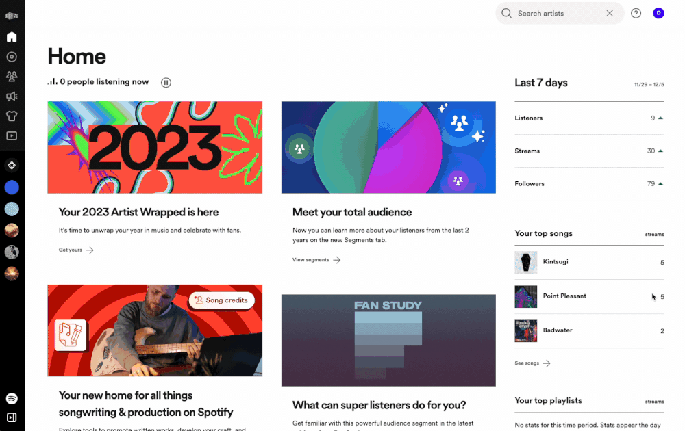
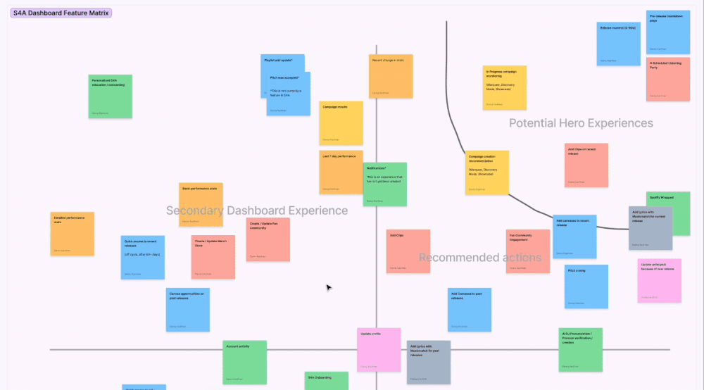
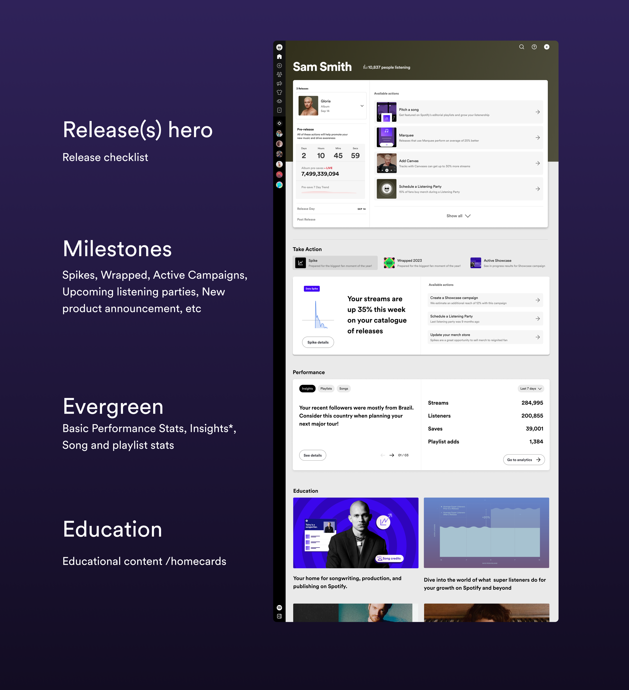

Background
Three phases. One mission.
Spotify for Artists (S4A) is the tool artists and their teams use to understand their performance and grow their audience on Spotify. This project unfolded across three key phases:
- Home modules experiment
- Release checklist rollout
- The future of Spotify for Artists home
Problem
A home page that didn't feel like home
When artists accessed Spotify for Artists, the experience lacked timely and personalized insights into their music journey. For labels handling numerous artists, juggling various tasks was challenging. Meanwhile, smaller independent artists faced the risk of overlooking important factors that could significantly impact their growth and performance on Spotify.

For instance, when a new album released, tracking its performance required extensive digging. The home screen delivered the exact same experience to every artist regardless of where they were in their journey.
Spoiler: it was mostly just stale marketing material.
This resulted in missed opportunities for artists to grow their audience — and for Spotify to drive pivotal, profitable actions. By enhancing this experience, we could empower artists while also boosting Spotify's potential for success.
"When I log into Spotify for Artists, the first thing I do is leave the home page — because there is just nothing relevant there for me."
— Manager at a large label
Scope
Mapping the full artist journey
Our main aim was to understand how artists and teams — regardless of their size — navigate their work processes. We wanted to create an effective hub that guides customers to the essential information and actions they need.

To tackle this, we delved into core workflows and formed a step-by-step plan, rolling out features gradually to ensure a smoother adoption curve. Working closely with customers of all sizes, we mapped out every capability in Spotify for Artists and understood where those functions sit across the artist journey — from preparing for a release, through the release cycle, to off-cycle.

Phase 01 — Experimentation
Modules on Home
The redesign of the home experience was a monumental effort. We asked: what could we deliver in the next month that would provide instant value and necessary learnings? Across the release journey, we identified two moments where we had high certainty something valuable could be implemented:
- The pre-release experience — a time when many actions are taken to optimize the strength of a release and teams are hyping up the drop to an artist's die-hard fans.
- Right after the release drop — when customers are monitoring performance of their release.
I designed a module that lives directly on home, giving customers an immediate and obvious pathway into the tasks they need for a pre-release — and a second module post-drop to surface that release, its performance data, and a quick path into a deeper analytics experience.
The results were staggering. This gave us clear validation to move forward and a rich qualitative signal from customer conversations that directly informed the next phase of design.
Phase 02 — Rollout
The Release Checklist
With the success of the modules, the next phase expanded to the entire release journey. The goal was to enable customers to confidently complete all necessary tasks for a successful release without ever navigating away from home.

For artists who aren't very tech-savvy, this gives them the confidence that they're doing everything they can for their releases to succeed on Spotify. For customers at larger labels, it dramatically reduces the legwork needed to verify that everything has been done across the handful of artists they manage.
Phase 03 — Future State
The future of Spotify for Artists Home
The final stage — where the work currently stands — expands beyond the release cycle to surface all items that may need someone's attention for growing on Spotify. We spent significant time on release moments, but there are many other instances where artists and their teams have opportunities to grow and expand their audience.
Moments like data spikes, end-of-year Wrapped, and campaigns for older catalogue music are all examples where artists and teams may want to reengage their audience.
Say a song in an artist's older catalogue appears on a popular TV show and suddenly sees a spike in listenership. The artist and their team can use this momentum to leverage Spotify to grow their audience — but only if they know it's happening.
Emphasizing relevant education is also a huge component of this initiative — helping customers better understand which actions have provided them with attributable benefit.
Phase 03 — Future State
Anatomy of the future of home
Every module, card, and signal on the future home was designed to be fully personalized to the artist — surfacing what matters to them, when it matters. We mapped out the complete anatomy of this experience: what types of content could appear, how priority was determined, and how the home would shift across the release cycle and beyond.

Next Steps
Refining based on what we learn
The next steps will focus on refining the future scope of home based on feedback received from customers and data that comes back after the full launch of the release checklist. The core focus will be on tasks customers can take off-cycle that continue to help them grow their audiences on Spotify.